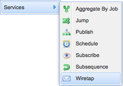
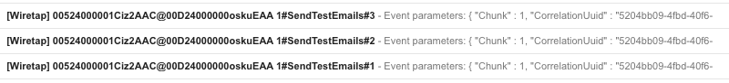

This tutorial demonstrates the invocation of business steps in a logical sequence.
It makes use of the support infrastructure afforded by the Services Package.
In this demonstration, we will create a simple sequence containing three Wiretap steps.
Expected Duration: 10 minutes.
Instructions
Open the App menu on the top right of Salesforce and choose Services.
Navigate to the Sequences tab. If you are presented with the splash page, simply click the Continue button
located towards the bottom right of the page.
Click the New Sequence button. Name the sequence
SendTestEmails, then click Save. This will take you to the drag-and-drop
Sequence Builder where you can add and delete Steps.
Repeat the following three times:
Click the New Step button and highlight the Services tag.

From the Services tag choose Wiretap. This will
create a Wiretap step at the end of the sequence.
Using drag and drop, reorder the three Wiretap steps so that the Terminate service occupies
the last position in the Sequence.
Your SendTestEmails Sequence should now look like this:
You are now ready to execute the steps in the SendTestEmails sequence.
Testing
Click the Enqueue Test Event button located towards the top of the page.
A dialogue will appear to indicate an event has been enqueued.
Check your email inbox which will eventually reflect three emails:

Each email represents an event entering and exiting a Wiretap step in the sequence.
In addition, every email contains details applicable to the context of the Enqueue Test Event button
press action and step specific aspects such as the sequence position of the Wiretap service.
Note that some of the context attributes (such as the recipient of the email) are configurable
while other attributes (such as the identity of the user generating the enqueue event)
are determined by the container and are not available for modification.